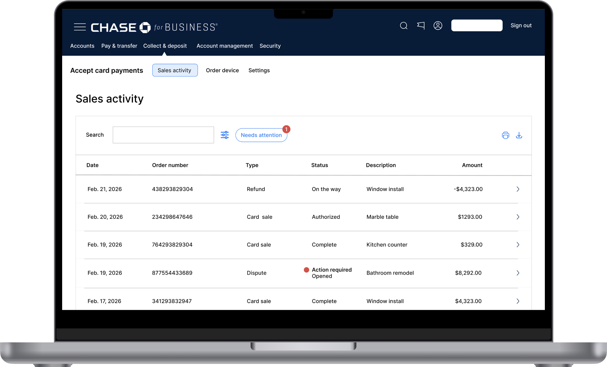
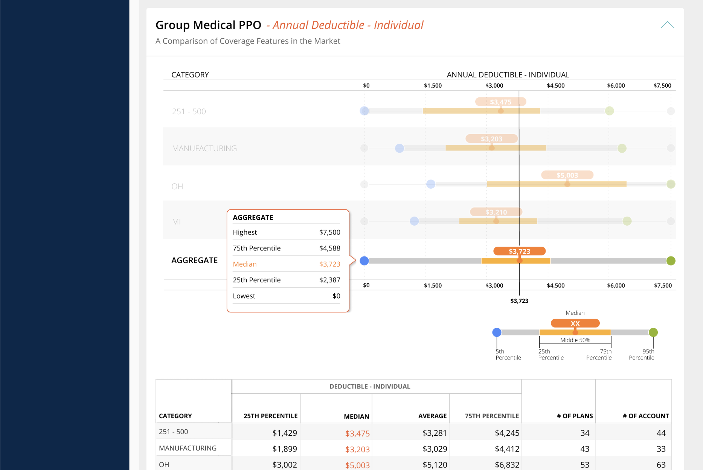

JPMorgan Chase · Payment Solutions
Redesigning Sales Activity
How research stopped us from building the wrong thing. User-testing showed merchants think in single transactions, instead of the grouped orders the backend was built around.
View case study →
Vertafore · RiskMatch
Making Room for the Middle
Cleaning up a crowded benchmarking chart so brokers could see where their client stood at a glance.
View case study →
Stationhead · Live audio
Turning listeners into broadcasters
Making a new kind of radio easy to understand, from first launch to first live show.
View case study →